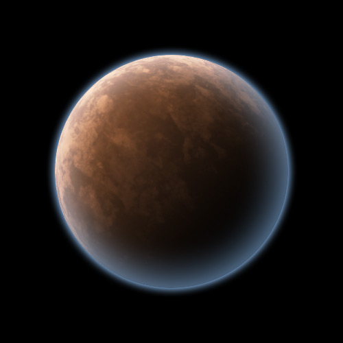

<!DOCTYPE HTML>
<html lang="en">
<head>
    <meta charset="UTF-8">
    <title>jump map test</title>
    <style type="text/css">
body {
    padding:0px;
    margin:0px;
    background-color:#222;
    color:white;
    font-family:"arial bold",sans-serif;
}
#jumpmapbox {
    width:80%;
    height:80%;
    position:absolute;
    top:10%;
    left:10%;
    background-color:rgba(0,0,50,0.5);
    color:white;
}
.jumpplanet {
    width:70px;
    text-align:center;
    position:absolute;
    font-size:x-small;
}
.youarehere {
    border:thin solid blue;
}
.jumpplanet:hover {
    border:thin solid yellow;
}
.jumpplanet img {
    width:50px;
}
.star {
    width:30px;
    height:30px;
    background-color:yellow;
    border-radius:15px;
    margin:5px auto;
}
.gasgiant {
    width:40px;
    height:40px;
    background-color:orange;
    border-radius:20px;
    margin:5px auto;
}
    </style>
</head>
<body>
    <div id="jumpmapbox">
        &nbsp;
    </div>
    <script type="text/javascript" src="http://code.jquery.com/jquery-latest.min.js"></script>
    <script type="text/javascript">
        var GAS_GIANT = 0, ROCK_PLANET = 1;
        var curss = 0, curp = 1;
        var sector = [
            {
                name:'Chris System',
                x:40,
                y:23,
                planets:[
                    {
                        name:'Chris Prime',
                        x:-30,
                        y:10,
                        radius:30,
                        type:ROCK_PLANET
                    },
                    {
                        name:'Chris Beta',
                        x:30,
                        y:-20,
                        radius:40,
                        type:ROCK_PLANET
                    },
                ]
            },
            {
                name:'Huy System',
                x:70,
                y:50,
                planets:[
                    {
                        name:'Huy Alpha',
                        x:10,
                        y:10,
                        radius:20,
                        type:GAS_GIANT
                    },
                    {
                        name:'Huy Beta',
                        x:-20,
                        y:10,
                        radius:30,
                        type:ROCK_PLANET
                    },
                ]
            },
            {
                name:'Saining\'s System',
                x:20,
                y:70,
                planets:[
                    {
                        name:'Saining Prime',
                        x:-10,
                        y:0,
                        radius:20,
                        type:ROCK_PLANET
                    },
                    {
                        name:'Saining Beta',
                        x:20,
                        y:-10,
                        radius:40,
                        type:GAS_GIANT
                    },
                    {
                        name:'Saining Gamma',
                        x:30,
                        y:20,
                        radius:40,
                        type:GAS_GIANT
                    },
                ]
            },
        ];
    </script>
    <script type="text/javascript">
        $(function (){
            $('jumpmapbox').empty();
            // appending solar systems to map
            for(var s in sector){
                $('#jumpmapbox').append('<div id="ss'+s+'" ss="'+s+'" class="jumpplanet"></div>');
                $('#ss'+s).append('<div class="star"></div>');
                $('#ss'+s).append('<div>'+sector[s].name+'</div>');
                $('#ss'+s).css({left:sector[s].x+'%',top:sector[s].y+'%'});
                if(s == curss){
                    $('#ss'+s).addClass('youarehere');
                }
                $('#ss'+s).click(ssc);
            }
        });
        // binds solar system click
        function binder() {
            for(var s in sector){
                $('#ss'+s).click(ssc);
            }
        }
        // solar system click
        function ssc(){
            var t = $(this).attr('ss');
            // center the clicked solar system
            // hide the others
            for(var s in sector){
                if(s === t){
                    $('#ss'+s).animate({top:'50%',left:'50%'},500,'linear',ssl);
                }
                else{
                    $('#ss'+s).animate({opacity:0},500,'linear');
                }
                $('#ss'+s).unbind();
            }
        }
        // solar system locate
        function ssl(){
            var t = $(this).attr('ss');
            // append planets to map
            for(var p in sector[t].planets){
                $('#jumpmapbox').append('<div id="p'+p+'" ss="'+t+'" p="'+p+'" class="jumpplanet"></div>');
                switch(sector[t].planets[p].type){
                    case GAS_GIANT:{
                        $('#p'+p).append('<div class="gasgiant"></div>');
                        $('#p'+p+' div').css({
                            width:sector[t].planets[p].radius,
                            height:sector[t].planets[p].radius,
                            'border-radius':(sector[t].planets[p].radius)/2
                        });
                        break;
                    }
                    case ROCK_PLANET:{
                        $('#p'+p).append('');
                        $('#p'+p+' img').css({
                            width:sector[t].planets[p].radius,
                            height:sector[t].planets[p].radius,
                        });
                        break;
                    }
                }
                if(t == curss && p == curp){
                    $('#p'+p).addClass('youarehere');
                }
                $('#p'+p).append('<div>'+sector[t].planets[p].name+'</div>');
                $('#p'+p).css({left:(50+(sector[t].planets[p].x))+'%',top:(50+(sector[t].planets[p].y))+'%'});
                $('#p'+p).click(pc);
            }
            $(this).click(ssuc);
        }
        // solar system un-click
        function ssuc() {
            var t = $(this).attr('ss');
            $('#jumpmapbox div[id^="p"]').remove();
            // return clicked solar system
            // unhide the rest
            for(var s in sector){
                if(s === t){
                    $('#ss'+s).animate({
                        left:sector[s].x+'%',
                        top:sector[s].y+'%'
                    }, 500, binder);
                }
                else{
                    $('#ss'+s).animate({opacity:1}, 500);
                }
            }
        }
        // planet click
        function pc() {
            var ssid = $(this).attr('ss'),
                pid = $(this).attr('p');
            console.log('ssid '+ssid+', pid '+pid);
            alert('jump to '+sector[ssid].planets[pid].name+'!');
        }
    </script>
</body>
</html>
<!--
planet: http://gallery.artofgregmartin.com/tuts_arts/making_a_planet.html
-->
